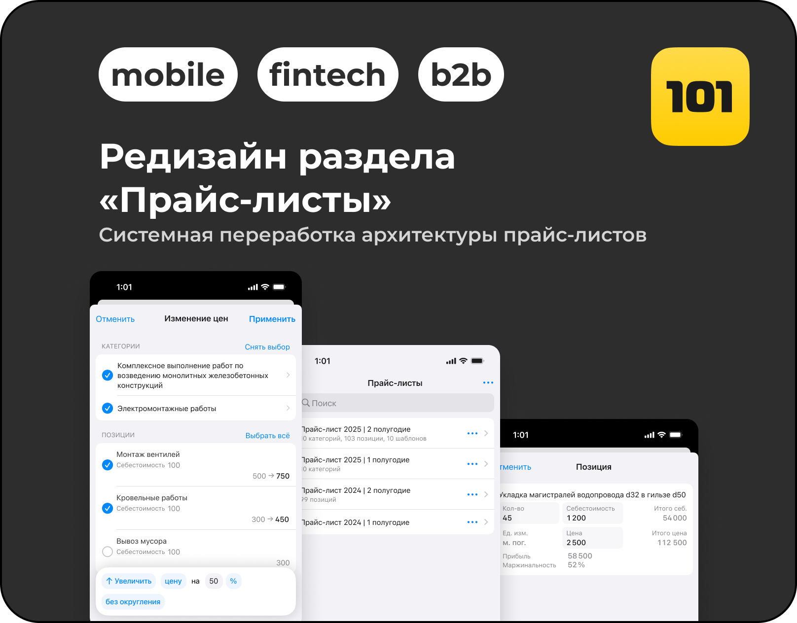
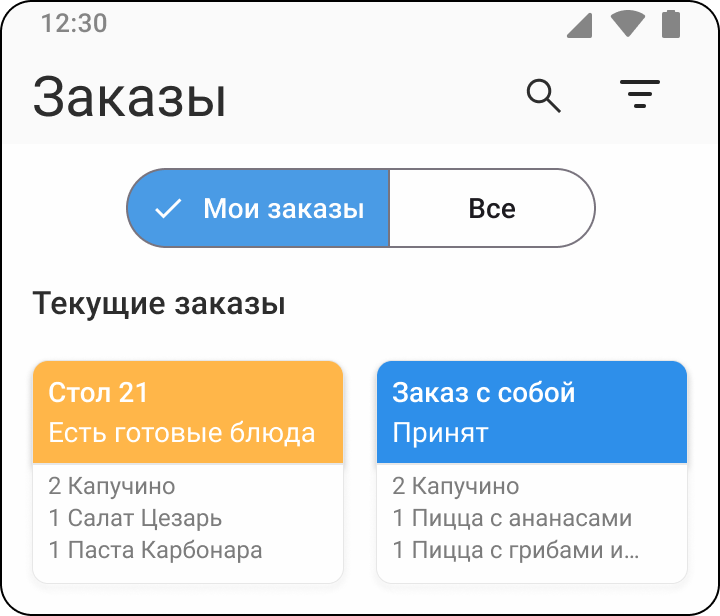

Продуктовый дизайнер / B2B SaaS / Mobile + Web
Более 3 лет опыта проектирования сложных продуктовых сценариев и логики
- Спроектировал с нуля раздел «Прайс-листы»: архитектуру данных, пользовательские сценарии и бизнес-логику с учётом масштабирования и будущих изменений. Обеспечил рост retention D30 на 22%
- Выстроил архитектуру раздела с учётом масштабирования и последующих изменений, снизив риски и затраты на будущий рефакторинг
- Адаптировал раздел прайс-листов под десктоп, расширив аудиторию и увеличив число продаж платной подписки на 8%
Кейсы

B2B SaaS / Mobile / Системная архитектура
Редизайн раздела «Прайс-листы»
Пересобрал прайс-листы из ограниченного справочника в системный инструмент для проектов, отчётов и смет.
Retention D30 +22%
Единый источник данных
Меньше ручного дублирования

Web / B2B-инструмент / Табличная модель
Десктопная модель прайса
Создал рабочую среду для больших массивов данных: таблица, массовые действия, контекстность и непрерывный поток.
Подписки +8%
Функциональный прототип

Mobile / UX research / Test task
Приложение официанта
Исследовал процесс приёма заказа, провёл интервью и спроектировал мобильный сценарий с меню, заказами и карточкой блюда.
Интервью
User Flow
Material Design 3
Опыт
Основной опыт — B2B SaaS для управленческого учёта в строительстве
101 - продуктовый дизайнер Январь 2024 - февраль 2026
B2B SaaS приложение для управленческого учёта в области строительства.
- Стал основным дизайнером команды и отвечал за сложные сценарии на этапе формирования требований.
- Спроектировал с нуля раздел «Прайс-листы»: архитектуру данных, пользовательские сценарии и бизнес-логику.
- Разработал веб-версию раздела без дублирования логики мобильной модели.
- Создал документацию в Figma: состояния, ограничения, дефолтные значения, связи экранов и формулы расчёта.
- Согласовал сценарии с банковским партнёром после самостоятельного изучения API и ограничений интеграции.
Фриланс - UX/UI дизайнер Март 2023 - декабрь 2023
- Проектировал моно-приложения под iOS.
- Помогал заказчикам формулировать ТЗ и осмыслять изначальные концепции.
- Спроектировал 10+ приложений для передачи в разработку со всеми состояниями экранов и компонентов.
- Стандарты передачи макетов снижали TTM на 30-35% по сравнению с похожими задачами.
Навыки
Figma
Design Systems
Components
User Flow
Документация логики
Mobile iOS / Android
Web
Prototyping
Python для прототипов
AI-инструменты
Английский B1
Образование 2 программы
- Яндекс.Практикум, 2023 - дизайнер интерфейсов. Сертификат · Рекомендательное письмо
- Челябинский государственный университет, 2006-2010 - математический факультет, кафедра компьютерной безопасности.
Дополнительный опыт личный контекст
- Работаю с Python и ИИ для прототипирования и улучшения коммуникации с разработкой.
- Более полугода развиваю игровой Telegram-бот для профессионального сообщества с 70 участниками.
- Моделирую в Blender как хобби.
- Работал с персоналом в отделе обучения. Люблю менторить и проводить онбординг для новичков.
- Организую походы для друзей.
- Во время обучения на курсах стал Старшим студентом: проводил дополнительные вебинары, организовывал внеурочную активность и студенческие кросс-ревью.
- Основал офлайн-бизнес с командой из 9 человек, который работал и приносил прибыль 9 лет.
Контакты